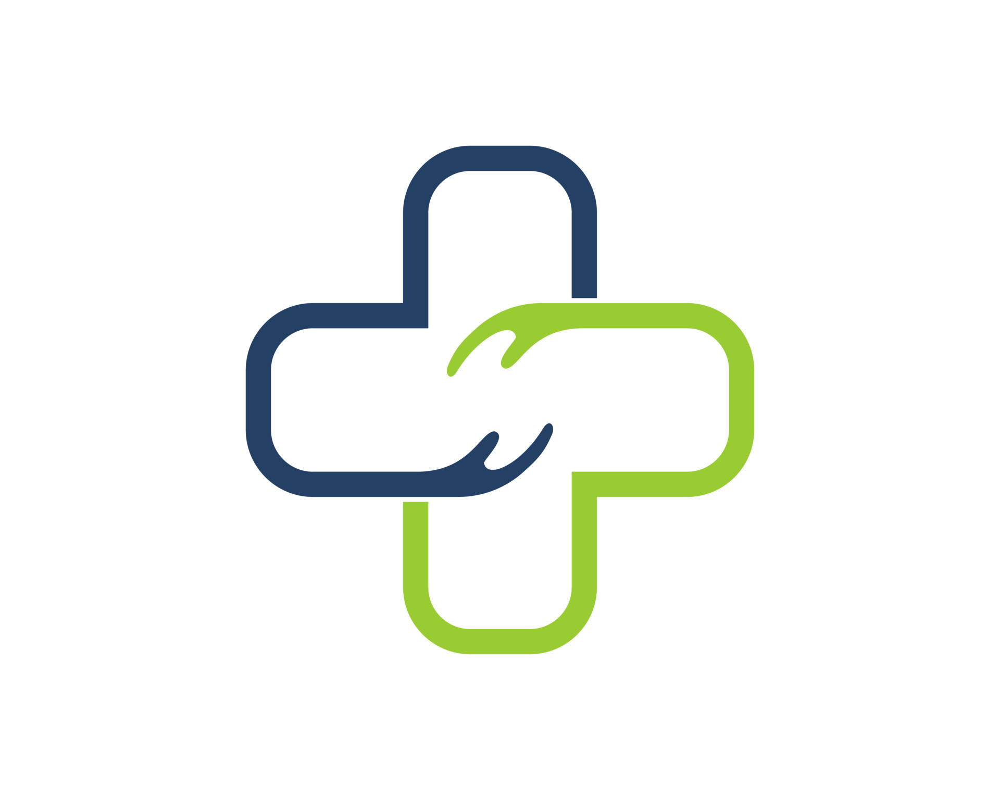

Get Expert Medical Care Online
HealthCare Consult provides convenient and affordable virtual consultations with licensed medical professionals.
Instant appointments
No hidden fees

Convenience and Quality Care
Real-time Chat
Connect with our doctors through secure real-time chat.
Online Prescriptions
Receive prescriptions and medical advice online.
Licensed Professionals
Our team of experienced, licensed doctors is here to help.
What Our Patients Say
"My experience with HealthConnect has been nothing short of exceptional. The entire process was smooth and hassle-free."
 - Jarif A. H.
- Jarif A. H.
"I was initially skeptical about seeking medical advice online, but HealthConnect exceeded my expectations."
- NK Kumar Shuhu
"The online consultations are affordable, and the doctors are compassionate and knowledgeable. Highly recommended."
- Niaz Nopi A. H.
"The convenience of virtual consultations with licensed doctors has made managing our healthcare needs so much easier."
- Neloy K.S.